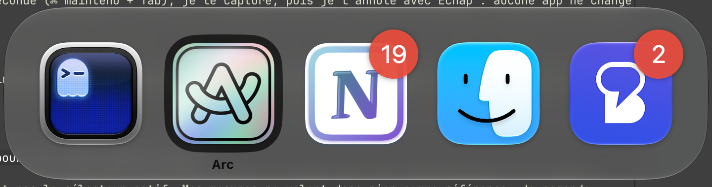
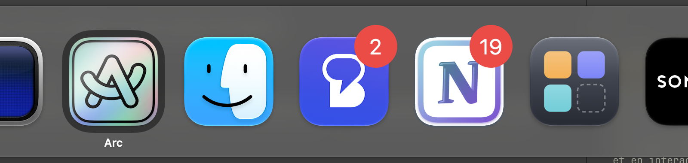
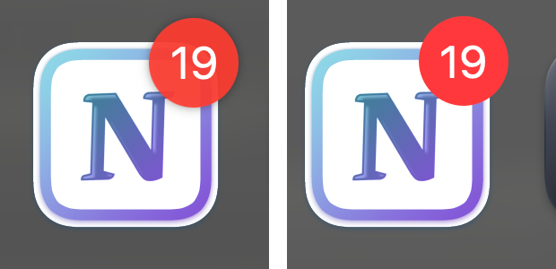
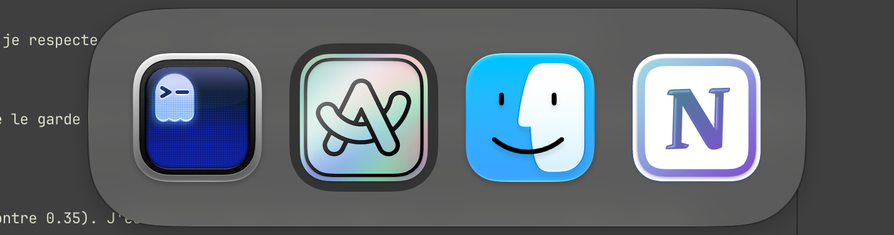
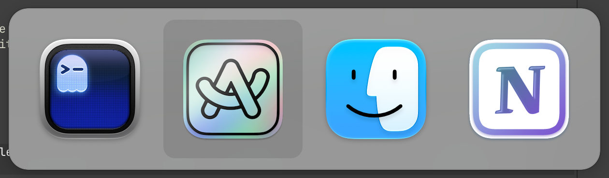
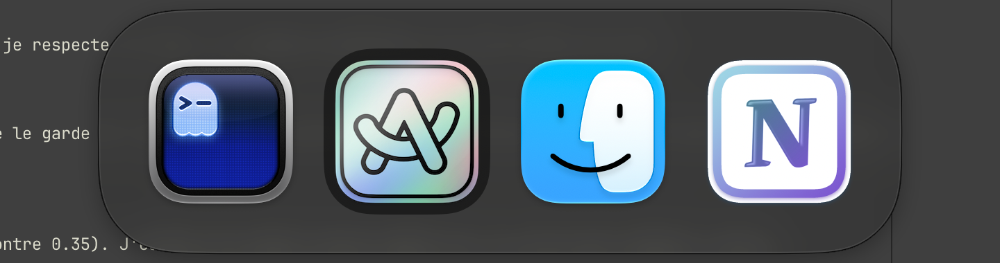
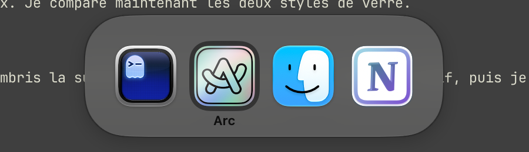

Altty vs the native macOS 27 switcher
Real screen captures (Retina, cropped), all taken on the same Mac over the same dark terminal background, system in light mode. The native switcher was captured with Altty's ⌘⇥ temporarily moved to ⌥⇥. The app lists differ slightly: the native switcher showed five running apps, Altty's demo four.
1 · Side by side, app names shown
The closest comparison: both show the selected app's name.


1b · Notification badge, zoomed
Notion's “19”, native on the left, Altty on the right.

2 · Side by side, with your settings
Your Altty settings have app names off, so the name band stays empty; the panel keeps the same size.

3 · Before / after

4 · Variants of the new design


Measurements
Measured on the native capture at 128 pt icons; Altty scales every value with the icon size.
| macOS 27 (measured) | Altty now | Altty before | |
|---|---|---|---|
| Icon pitch | 134 pt (128 + 6) | 134 pt (128 + 6) | 148 pt (144 cell + 4) |
| Panel margin | ≈ 24 pt | 24 pt | 12 pt |
| Panel height | ≈ 175 pt | 176 pt | 194 pt with names |
| Panel corners | ≈ 57 pt, continuous | 58 pt, continuous | 20 pt, circular |
| Selection | ≈ 120 pt dark well, ≈ 34 pt radius | 120 pt dark well, 34 pt continuous radius | 144 pt light square, 12 pt radius |
| Background | translucent glass, grey 0.35 | clear Liquid Glass + 20 % black tint, grey 0.37 | HUD material + hairline |
| Name | semibold black, in the bottom margin (4.4:1 on the glass) | semibold 13 pt white, in the bottom margin (4.8:1 light, 7.5:1 dark — WCAG AA 4.5:1) | regular 13 pt with shadow, extra 26 pt band |
| Notification badges | red circle 0.39 × icon, top-right | same, read from the Dock (Accessibility) | none |